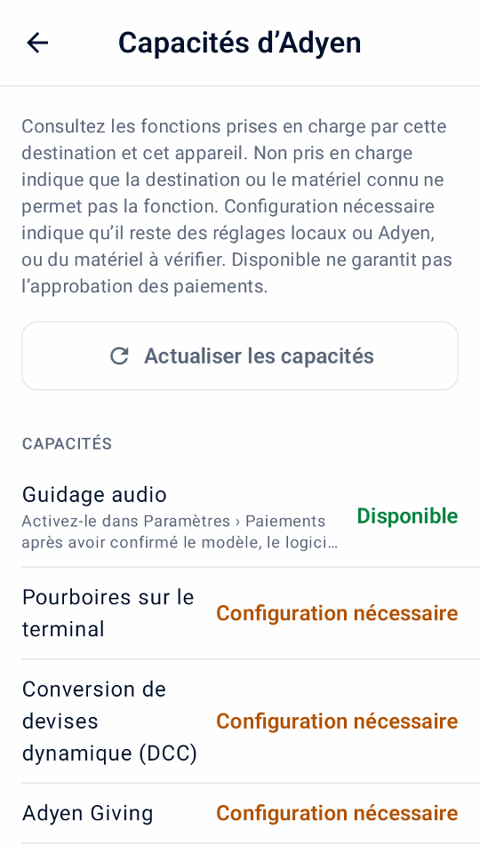
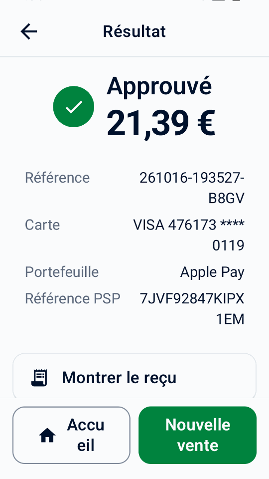
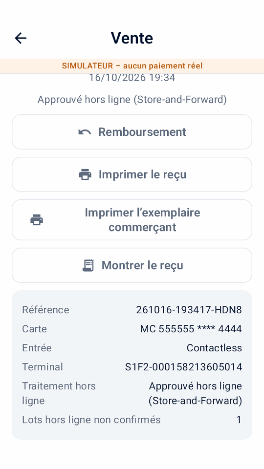
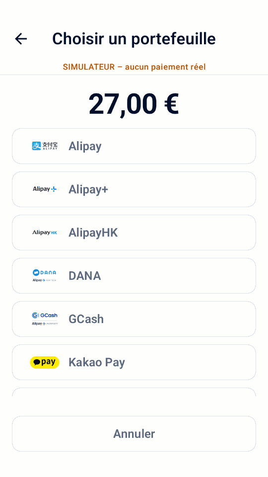
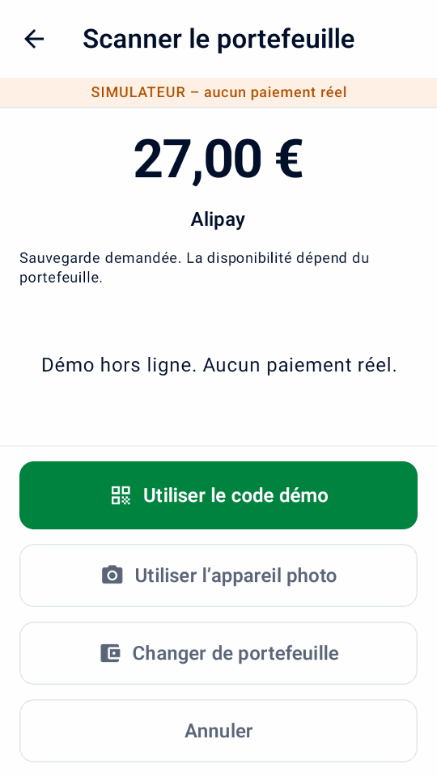
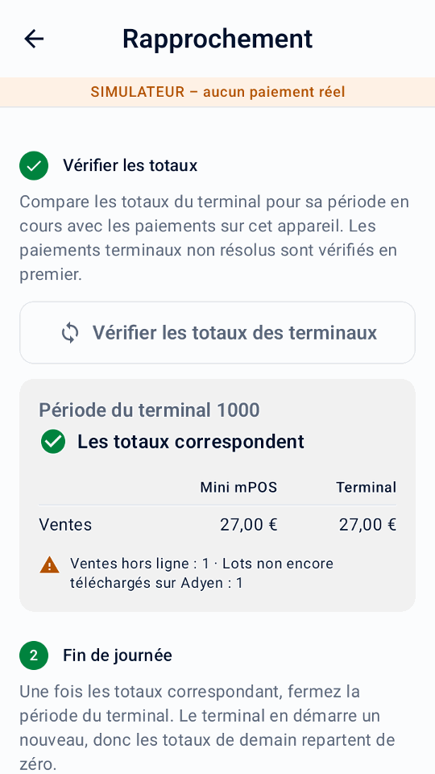
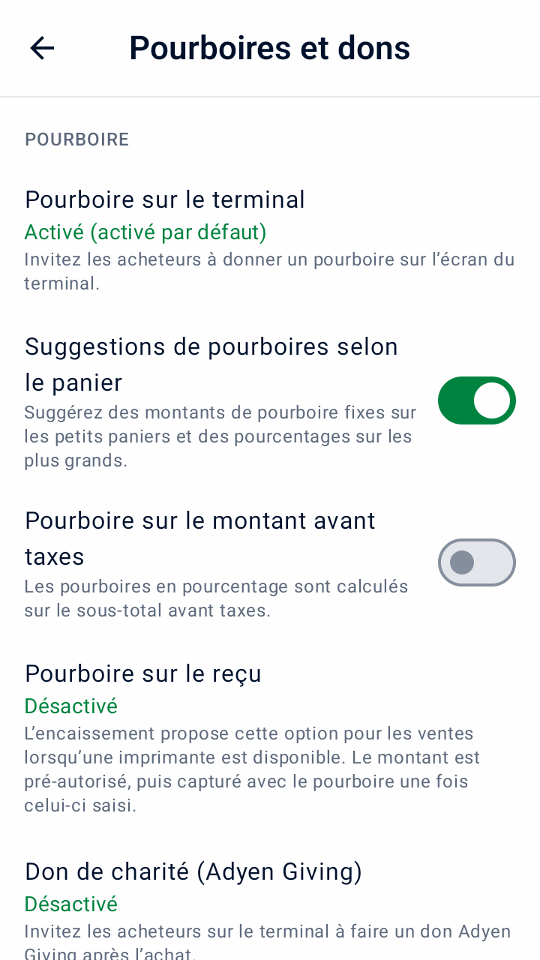

Guider
Utilisation de Mini mPOS
Procédures étape par étape pour le travail quotidien : accepter les paiements, rembourser, remettre les reçus et clôturer la journée. Des flux de travail facultatifs suivent à la fin.
Préparer les produits, les taxes et les accès du personnel
Avant d'accepter des paiements réels, complétez la configuration de la connexion Adyen. Vous avez besoin d'un terminal de paiement ou de l'application Adyen Payments. Préparez ensuite vos produits, taxes et accès du personnel une seule fois.
Définir la devise et la taxe
- Dans Paramètres › Paiements, choisissez un Devise que votre compte marchand accepte pour les paiements en personne.
- Dans Paramètres › Taxe, vérifiez les tarifs, si les prix incluent la taxe ou si la taxe est ajoutée à la caisse, ainsi que le taux par défaut pour les nouveaux produits.
Chaque produit a un taux de taxe ; utilisez un taux de 0 % pour les articles non taxés. Éteindre Facturer la taxe arrête de facturer des taxes mais maintient les taux.
Important
Changer la devise conserve les chiffres dans vos prix ; il ne les convertit pas à un taux de change. Vérifiez ensuite les prix de vos produits.
Ajouter des produits
- Ouvrez Produits et appuyez sur +.
- Entrez un nom, un prix et un taux de taxe. Ajoutez éventuellement une catégorie et un code-barres, saisis ou numérisés.
- Pour un dépôt, allumez Produit de préautorisation afin qu'il n'apparaisse que dans les pré-autorisations.
Configurer les PIN du personnel
- Dans Paramètres › Sécurité, appuyez sur Définir le PIN. Il protège les paramètres et les produits. Choisissez la date à laquelle l'application se verrouille à nouveau.
- Vous pouvez éventuellement appuyer sur Définir le PIN responsable. Le personnel en a ensuite besoin pour les remboursements, les annulations, les captures, les ajustements de montant et la saisie des pourboires.
Pour remplacer ou supprimer le PIN administrateur, utilisez Modifier le PIN administrateur ou Supprimer le PIN administrateur; sa suppression supprime également le PIN responsable. Des tentatives erronées répétées verrouillent l'entrée PIN pendant un certain temps. Pour un PIN oublié, voir Problèmes PIN.
Vérifier et configurer les fonctionnalités d'Adyen
Ouvrez Paramètres › Capacités d’Adyen après avoir connecté votre destination de paiement. L'écran affiche les fonctionnalités comme Disponible, Configuration nécessaire ou Non pris en charge sur cette destination. Il s'agit d'indicateurs de configuration, et non d'une preuve que votre compte marchand, votre carte ou votre mode de paiement peut effectuer une transaction. Jusqu'à ce que les paiements soient configurés, l'écran propose Terminer la configuration des paiements à la place.
- Appuyez sur Actualiser les capacités pour lire les paramètres du terminal sélectionné. L'inspection réelle des terminaux utilise le Rôles de gestion API dans Démarrage rapide.
- Pour les terminaux pris en charge, configurez le pourboire du terminal pour la devise de paiement, DCC, MOTO ou les limites hors ligne. Ces commandes mettent à jour les paramètres du terminal chez Adyen, pas seulement sur Mini mPOS, et uniquement lorsque vous appuyez sur Enregistrer sur Adyen. Les montants libellés en unités principales utilisent des unités monétaires entières ; les montants en unités mineures utilisent la précision monétaire d'Adyen.
- Activez les options de paiement dont vous avez besoin sous Paiements, Pourboires et dons ou Affichage du terminal pour le client dans Paramètres, puis testez-les dans TEST. La matrice répertorie également Adyen Giving, l'autorisation partielle, le supplément, les cartes cadeaux, le rapprochement des terminaux et l'affichage des acheteurs ; il ne fournit pas d'éditeur pour chaque fonctionnalité.
Tap to Pay n'offre pas de fonctionnalités de terminal physique telles que le pourboire sur terminal, l'affichage client, MOTO/MKE, les paiements hors ligne ou le rapprochement de terminal. L'autorisation partielle est une option de paiement distincte. Pour connaître les exigences en matière d'activation de compte et de mode de paiement, suivez les Documentation relative aux paiements en personne Adyen. La disponibilité du simulateur n’établit pas de prise en charge du terminal réel.

Accepter un paiement par carte
- Sur Accueil, appuyez sur Nouvelle vente. Appuyez sur les produits, appuyez sur Scanner le code-barres, ou ajoutez un Article personnalisé.
- Appuyez sur Débiter. Vérifiez les articles, les taxes et le total, et remplissez les champs de référence ou de courrier électronique.
- Appuyez sur Payer. Le terminal, ou l'application Adyen Payments avec Tap to Pay, demande au client de payer.
- Attendez le résultat. Ne commencez pas un autre paiement jusqu'à ce qu'il apparaisse.
- Remettez au client un reçu avec Imprimer le reçu, Envoyer le reçu par e-mail ou Partager le reçu, sauf s'il a été livré automatiquement.
Remarque
Le terminal lit la carte ; Mini mPOS ne reçoit jamais les détails complets de la carte. En fonction du terminal et de votre compte marchand, les clients peuvent insérer ou appuyer sur une carte, ou appuyer sur un téléphone ou une montre. Pour les paiements sans contact, la carte ou le téléphone doit rester à proximité du symbole sans contact jusqu'à confirmation du terminal. Avec Tap to Pay, suivez les instructions de l'application Adyen Payments.
Avertissement
Résultat inconnu ne signifie pas que le paiement a échoué. Vérifiez le paiement initial avant de débiter à nouveau.
Les références clients, la sauvegarde de la carte et les pourboires sont facultatifs ; voir références et fiches sauvegardées. Pour permettre aux clients de payer sur leur propre téléphone, utilisez un lien de paiement. Si un paiement est refusé, voir paiements refusés.
Utilisez des workflows de paiement facultatifs
Activez uniquement les options de paiement dont vous avez besoin dans Paramètres. À l'exception d'une autorisation partielle, ces flux de travail nécessitent un terminal physique pris en charge, et non Tap to Pay. Vérifier Capacités d'Adyen et testez d'abord votre configuration réelle.
Encaisser un paiement partiellement autorisé
Allumer Autoriser les autorisations partielles d'accepter une approbation de carte pour un montant inférieur au montant demandé. Quand le résultat apparaît Partiellement payé, vérifiez les montants payés et restants, puis appuyez sur Payer le reste sur cet écran de résultat et récupérez le solde sur une autre carte. L'application conserve les tentatives sur une même vente. Ne considérez pas la vente comme entièrement payée tant que le montant total n’est pas approuvé.
Une réponse manquante n’est pas une approbation partielle. Résoudre les résultats inconnus avant d’en collecter davantage. Ne démarrez pas une nouvelle vente pour le total initial : une partie approuvée a déjà été payée.

Utilisez l'écran du terminal destiné aux acheteurs
Avec un terminal réseau/cloud séparé, ouvrez Paramètres › Affichage du terminal pour le client. Choisissez d'afficher les détails de l'article avant le paiement, de demander à l'acheteur de confirmer la commande ou de recevoir un e-mail lorsque le paiement n'en contient aucun. Demander un e-mail reçus par courrier électronique à mettre en place; le reçu est ensuite envoyé automatiquement par courrier électronique lorsque Envoyez automatiquement le reçu par e-mail est allumé. Après approbation, vous pouvez afficher un code QR et demander une note de 0 à 10 ; une note renvoyée apparaît dans les détails de la transaction.
Ces invites utilisent la langue de l'application sélectionnée et sont également simulées. Ils ne sont pas proposés lorsque Mini mPOS s'exécute sur le terminal de paiement lui-même. Le code QR affiché contient la référence du commerçant, et non un téléchargement de reçu hébergé ; continuer à imprimer, envoyer par courrier électronique ou partager le reçu.
Invitez un don de charité
Après avoir organisé Adyen Giving avec Adyen, activez Don de charité (Adyen Giving) dans Paramètres › Pourboires et dons. Lors du règlement des ventes, sélectionnez-le pour inviter un don sur le terminal après paiement. Il n’est pas proposé pour les préautorisations ou les retenues de reçus.
L'achat et le don sont distincts. Le montant du don déclaré apparaît dans les détails de la transaction ; un achat approuvé à lui seul ne confirme pas un don.
Acceptez un paiement MOTO ou une saisie manuelle de la carte
- Vérifiez auprès d'Adyen que votre terminal et votre compte autorisent le mode de saisie requis. Configurez MOTO dans Capacités d'Adyen en cas de besoin, et définissez les PIN du personnel sous Personnel PINs.
- Dans Paramètres › Paiements, activez l'option MOTO ou Saisie manuelle de la carte. À la caisse, sélectionnez Commande par courrier/téléphone (MOTO) pour une commande à distance, ou Saisie manuelle de la carte (MKE) lorsque la lecture par puce ou sans contact échoue. Un seul peut être sélectionné.
- Appuyez sur Payer, examinez l'avertissement de responsabilité en matière de fraude et de rétrofacturation et complétez l'approbation du responsable lorsque vous y êtes invité. Saisissez les détails de la carte sur le terminal, jamais dans Mini mPOS.
Les transactions avec clé entraînent une responsabilité plus élevée en matière de fraude et de rétrofacturation pour le commerçant. L'activation d'un commutateur d'application n'active pas le service chez Adyen et ne supprime pas ce risque.
Reconnaître les paiements hors ligne et les lots en attente
Les modes EMV et Store-and-Forward hors ligne nécessitent un terminal pris en charge atteint localement : Mini mPOS sur ce terminal ou un terminal sur votre réseau. Ils ne sont pas proposés via le routage cloud ou Tap to Pay. Organisez le traitement hors ligne avec Adyen et examinez ses risques avant de fixer des limites dans Capacités d'Adyen; Mini mPOS ne met pas lui-même les paiements en file d'attente et ne rend pas un terminal accessible lorsque votre réseau local est en panne.
L'historique marque les ventes hors ligne signalées. Ouvrez une vente pour voir Traitement hors ligne, qu'il ait utilisé EMV hors ligne ou Store-and-Forward, et tout Lots hors ligne non confirmés signalé par le terminal. Une approbation hors ligne ne peut pas encore avoir de référence PSP. Il ne s'agit pas d'un résultat inconnu, mais cela ne confirme pas qu'Adyen a reçu ou réglé le paiement.
Restaurez la connexion du terminal à Adyen et vérifiez les paiements téléchargés et les résultats finaux dans le Customer Area. Vérifiez les avertissements hors ligne et de lots non confirmés pendant rapprochement des terminaux; les totaux correspondants ne confirment pas le règlement hors ligne. Si aucune réponse de paiement concluante n'est arrivée, suivez récupération à résultat inconnu au lieu d'assumer une approbation hors ligne ou de facturer à nouveau.

Scanner le code d'un portefeuille d'acheteur
Utilisez Scanner le portefeuille lors du paiement des soldes pour lire un code de paiement provenant de l'application de portefeuille de l'acheteur. Ceci est différent de la numérisation d’un code-barres de produit ou d’un reçu de remboursement. Il fonctionne avec un terminal de paiement physique, et non avec Tap to Pay ; La découverte du portefeuille nécessite un rôle de lecture.
- Vérifiez les champs de total et de paiement, puis appuyez sur Scanner le portefeuille. Si le pourboire sur reçu est sélectionné, confirmez le paiement sans ce pourboire : le portefeuille facture le total immédiatement, et non une pré-autorisation.
- Choisissez le portefeuille de l'acheteur. Un seul portefeuille disponible est sélectionné automatiquement. Seuls les portefeuilles configurés individuellement apparaissent ; Alipay+ n'implique pas d'options distinctes GCash, DANA, Kakao Pay ou TrueMoney.
- Sur un terminal confirmé équipé d'un scanner, appuyez sur son bouton de numérisation. Il peut s'agir du terminal réseau/cloud, et non de l'appareil exécutant Mini mPOS. Pour numériser avec l'appareil photo de l'appareil, appuyez sur Utiliser l’appareil photo.
- Scannez le code de paiement QR ou le code-barres de paiement de l'acheteur. Un scan valide démarre le paiement immédiatement. Attendez le résultat normal du paiement et remettez son reçu.
L'annulation conserve les champs du panier et du paiement. Les codes invalides ne paient pas : scannez à nouveau ou changez de portefeuille. Une analyse native expire après 30 secondes ; utiliser Scannez à nouveau ou la caméra. Quitter l'application arrête la numérisation ; le retour nécessite une nouvelle analyse explicite. Les codes ne peuvent pas être saisis ou collés.
Enregistrer la carte tente d’enregistrer les données de paiement lorsque la référence et le consentement de l'acheteur le permettent. La prise en charge du portefeuille varie ; seul un jeton de paiement stocké renvoyé signifie que les détails ont été enregistrés. Un paiement approuvé sans jeton est toujours approuvé. Gérer les problèmes de découverte de portefeuille ou de paiement; ne remplacez jamais un paiement inconnu en scannant à nouveau.
Confirmez la configuration de votre portefeuille et testez le comportement avec le Guide du portefeuille Adyen et Guide Adyen PayPal et Venmo.


Démonstrations de simulation en français de numérisation de portefeuille.
Rembourser ou annuler un paiement
- Rembourser
- Pour un paiement facturé. Renvoie tout ou partie de l'argent.
- Annuler (annuler)
- Pour un paiement retenu qui n'a pas été capturé : appuyez sur Annuler la préautorisation pour un dépôt, ou Annuler le paiement pour une vente En attente de pourboire. Cela libère la prise.
Pour rembourser :
- Sur Accueil, appuyez sur REMBOURSEMENT et scannez le code de remboursement QR sur le reçu, ou ouvrez la vente originale dans Historique.
- Choisissez un remboursement complet, un montant ou des articles individuels. Les remboursements d'articles nécessitent la vente originale sur cet appareil.
- Confirmez le remboursement et entrez le PIN responsable si demandé.
Chaque remboursement est lié à son paiement initial ; les remboursements sans un ne sont pas pris en charge. Remboursez les liens de paiement payés dans le Customer Area.
Important
Remboursement demandé Cela signifie qu'Adyen a reçu la demande, et non que le client a l'argent. Vérifiez le résultat final dans le Customer Area. Si le résultat d'un remboursement est inconnu, vérifie-le avant de réessayer.
Imprimez, envoyez par courrier électronique ou partagez les reçus
À partir d'un résultat de paiement ou d'une entrée de l'historique, appuyez sur Imprimer le reçu ou Envoyer le reçu par e-mail. Les tablettes et les téléphones offrent également Partager le reçu, qui envoie une image via le menu de partage de Android. L'impression nécessite un terminal avec une imprimante.
Personnaliser et tester les reçus
- Dans Paramètres › Reçus, entrez les détails de votre entreprise, l'en-tête et le pied de page. Ou appuyez sur Importer les détails de l’entreprise depuis Adyen pour vérifier les données d’Adyen. Choisissez Compléter les données manquantes pour conserver le texte existant, ou Remplacer les données existantes pour utiliser le nom, l’adresse et le téléphone fournis. Les champs importés vides, l’identifiant fiscal, le titre et le pied de page restent inchangés.
- Choisissez Imprimer automatiquement, quand imprimer un Exemplaire commerçant, et s'il faut Afficher le code de remboursement QR.
- Appuyez sur Imprimer le reçu du test et vérifiez l'impression. L'aperçu à l'écran n'affiche pas la disposition exacte de l'imprimante.
Autres options :
- Afficher les montants des taxes
- Affiche la taxe incluse ou ajoutée au total. Cela ne change pas la taxe facturée.
- Afficher la répartition des taxes
- Répertorie la taxe pour chaque taux. Il est nécessaire d'indiquer la taxe incluse lorsque les prix incluent la taxe.
- Afficher les totaux imposables par taux
- Regroupe les totaux des articles par taux de taxe, y compris 0 %.
- Afficher les références
- Activé par défaut. Imprime la référence commerçant et toute référence client, afin qu'un reçu puisse être rapproché de son paiement.
- Taux d'imposition marqué (%)
- Marque les éléments à ce taux avec un Marqueur d’article et son explication. Laissez-le vide sans marqueur.
- Caractères par ligne
- 32 par défaut, pour les rouleaux de reçus étroits. Choisissez la largeur de votre imprimante avec un test d'impression.
Définir la langue
L’application prend en charge l’anglais, le chinois simplifié, le chinois traditionnel, le japonais, le portugais du Brésil, l’espagnol et le français. Choisissez Paramètres › Langue pour remplacer la langue sur cet appareil. Le changement s'applique immédiatement au texte de l'application et aux étiquettes de reçus générées par l'application ; Le texte du marchand enregistré, les noms de produits, les paramètres de devise et de taxes restent inchangés. Suivre l’appareil utilise la langue de l'appareil sur Android 12 ou version antérieure, ou le choix de langue par application de Android sur Android 13 ou version ultérieure. Les lignes de reçu de carte d'Adyen suivent la langue de reçu du terminal.
Configurer les reçus par e-mail
- Ouvrez Paramètres › Reçus par e-mail. Choisissez votre fournisseur ou entrez le serveur SMTP, le port, l'expéditeur et la connexion. Utilisez STARTTLS ou SSL/TLS.
- Envoyez un e-mail de test.
- Sur le même écran, choisissez quand demander l'e-mail du client et si vous souhaitez envoyer automatiquement les reçus.
Suivez les instructions de votre fournisseur pour autoriser SMTP et obtenir le bon mot de passe :
Si les reçus ne s'impriment pas ou ne sont pas envoyés, voir problèmes d'imprimante et de messagerie.
Trouvez des paiements et clôturez la journée
Historique répertorie les paiements et les remboursements par jour, avec les totaux quotidiens.
- Filtrer par ventes, En attente de pourboire, préautorisations, remboursements ou A besoin d’attention, et utiliser Mode de paiement pour une marque de carte ou un portefeuille.
- Recherchez par référence, code d'autorisation, référence client ou email, les quatre derniers chiffres de la carte, la marque, le portefeuille ou le montant exact. Chaque mot doit correspondre :
visa 34trouve des paiements Visa de 34.
Les totaux à l'écran suivent votre recherche et vos filtres. Les paiements retenus, tels que les dépôts et les pourboires sur le reçu, comptent comme des ventes le jour où leur capture est acceptée.
Clôture la journée
- Ouvrez Historique, filtrer par A besoin d’attention et résoudre chaque entrée ; voir résultats inconnus.
- Vérifiez le En attente de pourboire et filtres de préautorisation. Saisissez les pourboires et capturez ou annulez les dépôts avant l'expiration de leurs retenues.
- Appuyez sur l'icône d'impression à côté du jour pour imprimer le Résumé quotidien local.
- Réconcilier avec les rapports d'Adyen dans le Customer Area ; voir le Guide de réconciliation des règlements Adyen.
Le récapitulatif couvre toute la journée, en ignorant les filtres : ventes, pourboires inclus, remboursements acceptés, net, nouvelles retenues et opérations non résolues, pour chaque devise. TEST et l’activité du simulateur sont étiquetés. Les liens de paiement payants et les captures sans date connue sont répertoriés séparément comme activité non datée.
Important
Le résumé quotidien local couvre uniquement les paiements conservés sur cet appareil. Il ne s'agit pas du règlement d'Adyen et n'inclut pas d'autres appareils. Le Customer Area fait autorité.
Avertissement
Le basculement entre LIVE, TEST et le simulateur supprime définitivement tout l'historique des paiements et les données de rapport sur cet appareil. S'il existe des paiements inachevés, l'application avertit à nouveau : rien n'est annulé chez Adyen, mais les données de récupération locale et de nouvelle tentative sécurisée sont perdues. Les produits et les paramètres restent.
Comparez avec les totaux du terminal et clôturez une période
- Sur Accueil, appuyez sur Rapprochement, alors Vérifier les totaux des terminaux. Mini mPOS vérifie d'abord les paiements de terminal en attente ou inconnus, puis affiche côte à côte les ventes et les remboursements de Mini mPOS et du terminal.
- Si Les totaux diffèrent, résolvez les paiements qui nécessitent une attention particulière dans l'historique et vérifiez à nouveau. La période terminale n'est pas nécessairement un jour calendaire ; d'autres appareils utilisant le terminal ou un historique local manquant peuvent entraîner des différences. Les liens de paiement, les débits de jetons et l'historique des échantillons ne sont pas des paiements terminaux.
- À la fin de la journée, appuyez sur Clôturer la période du terminal, confirmez et complétez l'approbation du responsable si demandé. Le terminal termine sa période et en commence une nouvelle ; cela ne peut pas être annulé.
- Vous pouvez éventuellement appuyer sur Imprimer le rapport du jour pour le Résumé quotidien local.
Ceci est disponible pour les terminaux physiques et le simulateur, pas pour Tap to Pay. Une comparaison correspondante ou une période fermée ne confirme pas le règlement, l'achèvement du remboursement ou le téléchargement hors ligne. Continuez à utiliser le Customer Area pour connaître les résultats financiers finaux.

Utilisez des références et enregistrer des cartes
- Référence marchand
- Pour enregistrer un numéro de réservation ou de commande, activez Paramètres › Paiements › Demandez une référence marchand. Le numéro identifie le paiement dans Adyen. Si laissé vide, une référence unique est générée.
- Référence acheteur
- Dans Paramètres › Paiements, choisissez le Référence acheteur: une référence client saisie lors du paiement (par défaut), l'e-mail du client, ou aucune. Il est envoyé à Adyen avec chaque paiement. Les références de courrier électronique sont hachées par défaut ; utilisez le même sel sur chaque appareil.
- Cartes enregistrées
- Avec un ensemble de références d'acheteur, activez Proposer l’enregistrement des cartes et choisissez le Modèle de traitement récurrent pour votre configuration Adyen. Obtenez le consentement du client avant de sélectionner Enregistrer la carte pour de futurs paiements. Pour en charger un plus tard, voir facturer un jeton.
Charger un jeton
- Sur Accueil, appuyez sur Débiter un jeton et entrez le PIN responsable si demandé.
- Saisissez la référence client, ou l'e-mail lorsqu'il s'agit de la référence acheteur, et appuyez sur Rechercher des jetons.
- Choisissez un jeton, puis ajoutez des produits ou un Article personnalisé. Ce panier est distinct de Nouvelle vente.
- Vérifiez le montant des frais et appuyez sur Débiter.
Le client n’est pas présent, alors obtenez d’abord son consentement. Jetons enregistrés pour un autre Modèle de traitement récurrent ne peut être choisi. Remboursez ces paiements de Historique; leurs reçus n'ont aucun code de remboursement QR. Si le résultat d'une charge est inconnu, vérifiez-le dans l'historique dans les sept jours, puis dans le Customer Area. Lors du paiement d'une nouvelle vente, une fois que la référence client saisie a enregistré des tokens, Débiter un jeton apparaît entre Scanner le portefeuille et Créer un lien de paiement: après approbation du Manager, choisissez un token pour lui imputer la vente.
Accepter le paiement avec un lien
Conditions préalables
- Votre compte marchand répond aux Conditions requises pour Adyen Pay by Link, y compris les termes et conditions, avant utilisation en direct
- À la caisse d'une vente, appuyez sur Créer un lien de paiement.
- Affichez le code QR ou appuyez sur Envoyer le lien par e-mail, Imprimer le lien ou, sur une tablette ou un téléphone, Partager le lien.
- Gardez l'écran du lien ouvert pour voir le paiement arriver, ou appuyez plus tard sur Vérifier le paiement dans son entrée Historique.
- Si le lien n'est plus nécessaire, appuyez sur Annuler le lien.
L'entrée montre En attente de paiement jusqu'à ce que le lien soit payé, expire ou soit annulé. Définir la durée de fonctionnement des liens Paramètres › Paiements › Liens de paiement. Les liens sont uniquement destinés aux ventes, pas aux dépôts ni aux pourboires sur le reçu.
Dans le simulateur, les liens fonctionnent hors ligne sans les informations d'identification API. Leurs codes QR ne peuvent pas accepter de paiements. Appuyez sur Simuler le paiement pour terminer la démo, avec l'approbation du responsable si configuré. L'écran et les reçus livrés restent étiquetés comme démos ; aucun argent ne bouge.
Important
Toute personne disposant d’un vrai lien peut payer jusqu’à son expiration. Rembourser les liens payants dans Customer Area › Paiements › Liste de paiements; l'application ne peut pas les rembourser.
Si un lien est manquant ou n'est pas mis à jour, voir problèmes de lien de paiement.
Conserver et récupérer un dépôt
Conditions préalables
- Préautorisation activée par le support Adyen pour vos méthodes de paiement ; voir le Guide de préautorisation Adyen
Une préautorisation permet de conserver un montant sur la carte sans le débiter. L'ensemble de votre compte n'a pas besoin d'être capturé manuellement ; Mini mPOS le demande uniquement pour ces paiements.
- Sur Accueil, appuyez sur Nouvelle pré-autorisation. Choisissez un produit en préautorisation, scannez son code-barres ou saisissez un montant. Chaque préautorisation comporte un élément.
- Au moment du paiement, appuyez sur Pré-autoriser. Le reçu indique le montant détenu.
- Lorsque vous êtes prêt, ouvrez l'entrée dans Historique et choisissez une action :
- Capturer
- Encaisse le montant dû. Un montant inférieur libère le reste ; un montant plus élevé demande d'abord à l'émetteur de la carte d'augmenter la retenue. Les remboursements sont possibles une fois la capture demandée.
- Ajuster le montant
- Modifie le montant détenu sans le facturer. La présentation du même montant renouvelle l’autorisation.
- Annuler la préautorisation
- Libère la prise. Si le paiement a déjà été enregistré dans le Customer Area, Adyen le rembourse intégralement.
Capture demandée n'est pas une confirmation définitive ; vérifiez le Customer Area. Pour des réponses immédiates aux ajustements, activez Renvoyer les données d'autorisation d'ajustement comme décrit dans le Guide de réglage des autorisations Adyen.
Avertissement
Les retenues expirent. Vérifiez quotidiennement le filtre de préautorisation et capturez ou annulez rapidement. Pour les opérations ayant échoué ou inconnues, voir capturer les problèmes.
Récupérez un pourboire sur le terminal
- Vérifiez les pourboires sur le terminal dans Capacités d'Adyen. Définissez les options de pourboire prédéfinies et personnalisées du terminal pour la devise de paiement si nécessaire.
- Dans Paramètres › Pourboires et dons, activez Pourboire sur le terminal et choisissez sa valeur par défaut de paiement. Activer éventuellement Suggestions de pourboires selon le panier pour des montants fixes sur les petits paniers et des pourcentages sur les plus grands, ou Pourboire sur le montant avant taxes.
- À l’encaissement d’une vente, sélectionnez Pourboire sur le terminal et appuyez sur Payer. Le client choisit un pourboire avant que la carte ne soit débitée. Vérifiez le total retourné et le pourboire et remettez le reçu.
Cela ne nécessite pas d’imprimante ni d’entrée de pourboire ultérieure. Pourboires sur le terminal et pourboires sur le reçu ne peuvent pas être sélectionnés ensemble. Ni l'un ni l'autre n'est proposé pour les préautorisations, les paiements par portefeuille numérisé ou les liens de paiement ; les pourboires sur le terminal ne sont pas proposés avec Tap to Pay.

Récupérez un pourboire inscrit sur le reçu
Conditions préalables
- Un terminal avec une imprimante
- Pré-autorisation et surcapture activées par le support Adyen ; voir le Guide des pourboires sur reçu Adyen
Dans Paramètres › Pourboires et dons, choisissez Activé (désactivé par défaut) ou Activé (activé par défaut) pour définir la façon dont le commutateur de paiement démarre. Désactivé, la valeur par défaut, le cache. Certaines cartes de débit et portefeuilles ne prennent pas en charge ce flux.
- À la caisse d'une vente, allumez Pourboire sur le reçu et appuyez sur Payer. Le montant de l’addition est réservé, sans être débité.
- Imprimez le reçu. Il comporte des lignes de pourboire et de total vierges, et la copie du commerçant comporte une ligne de signature.
- Lorsque le client l’a rempli, appuyez sur Entrez le pourboire sur le résultat ou utilisez le filtre En attente de pourboire dans l’Historique.
- Saisissez le pourboire ou le total, ou appuyez sur Pas de pourboire, et confirmez.
L’application capture le montant de l’addition et le pourboire. Pour les pourboires supérieurs à 20 %, l'émetteur de la carte doit d'abord augmenter la retenue ; s'il refuse, entrez un pourboire plus petit ou aucun. Un pourboire enregistré ne peut pas être modifié. Avant de saisir un pourboire, annulez le paiement au lieu de le rembourser ; par la suite, les remboursements incluent le pourboire.
Avertissement
Saisissez rapidement chaque pourboire, y compris zéro pourboire, afin que les factures soient capturées avant l'expiration de leur retenue. Pour les captures échouées ou inconnues, voir capturer les problèmes.
Configurer plus d'appareils et gérer les données
- Sur l'appareil configuré, ouvrez Paramètres › Données et transfert › Partager avec un autre appareil. Choisissez le catalogue, les paramètres et/ou les mots de passe et les clés, puis appuyez sur Afficher les codes QR.
- Sur le nouvel appareil, choisissez Configurer à partir d’un autre appareil et scannez tous les codes, dans n'importe quel ordre. Choisissez de fusionner ou de remplacer son catalogue.
- Saisissez le code de transfert à 12 caractères affiché sur le premier appareil, même lors de la copie uniquement de produits ou de paramètres. Gardez-le séparé des codes QR. Appuyez sur Importer.
- Vérifiez les prix et les taxes, testez la connexion dans Paramètres › Terminalet imprimez un reçu de test.
Le nouvel appareil conserve sa propre destination de paiement, son terminal, son environnement et son enregistrement Tap to Pay. Une clé partagée ne fonctionne pour un autre terminal que si Adyen lui attribue la même clé.
Important
Il s'agit d'une copie unique, et non d'une synchronisation ou d'une sauvegarde de l'historique des paiements. Chaque appareil conserve ses propres paiements. La suppression des données de l'application dans Android supprime tous les produits, paramètres et historiques de l'appareil.
Dans Paramètres › Données et transfert, définir Conservez les transactions pour ou appuyez sur Effacer l’historique réglé; les paiements non résolus sont toujours conservés.
Sur une tablette ou un téléphone, Mini mPOS recherche une version plus récente au démarrage. Si Accueil propose Mettre à jour, appuyez dessus pour ouvrir l’APK dans votre navigateur, puis installez le téléchargement. Les terminaux Adyen se mettent à jour via le Customer Area, pas cette invite. Vous pouvez également obtenir le dernière version et suivez le étapes d'installation. Conservez la même source de signature et installez-la sur l'application existante ; ne désinstallez pas et n’effacez pas ses données.
Pour les problèmes d'importation, voir PIN et problèmes de transfert.